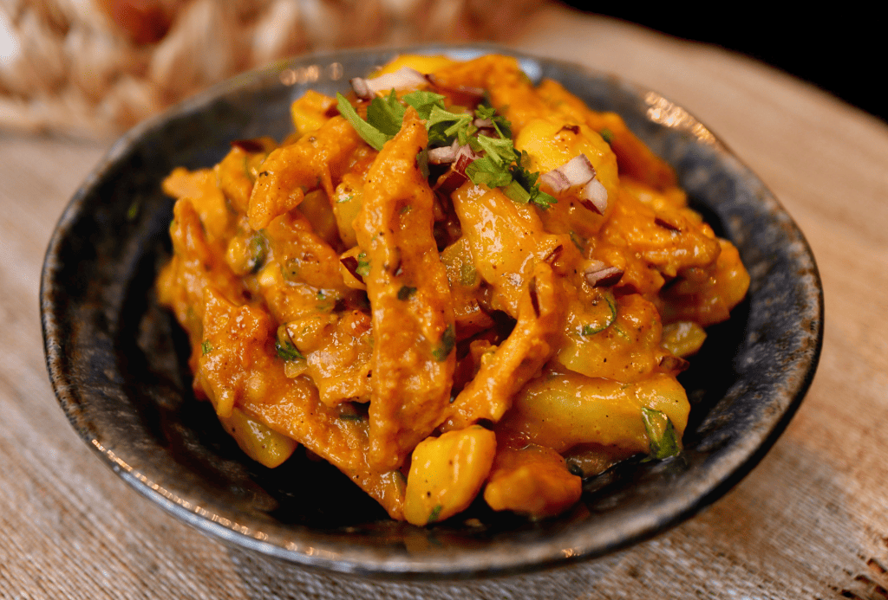

Aloo Nimki Recipe

This is an snacks from Eastern parts of Nepal.
It is a mix of crispy nimkis in potato gravy topped up with fresh onions,
chillies, bhujiyas, chaat masala and tomatoes.
You'll need
To make the gravy
- 4 small sized potatoes, boiled and peeled
- 1 tsp gram flour
- 1 tsp ginger and garlic paste
- 1 tsp oil
- 1 tsp kashmiri red chilli powder
- 1/2 tsp spicy red chilli powder
- 1 tsp chaat masala
- salt
- water
- red food coloring (optional)
Extra Stuff
- Nimki
- Chopped onions
- Chopped green chilli
- Chopped coriander leaves
- Chopped tomatoes
- 3-4 boiled potatoes, cubed
- Chaat masala
- Bujiya
- Dalmoth (mixture)
- Lemon juice
Cooking Instructions
- Start off by heating a kadhai and oil. Then cook the ginger
garlic paste for 10-20 seconds on low flame. Then add gram flour
and cook it low and slow for 1 minute.
- Then mash about 4 boiled potatoes and add it to the kadhai and let
it cook for further 5 minutes on medium flame. Finally, add in your
masalas and salt and little wter to bring everything together to a thick
slurry like consistency.
- Let it cool and then blend it into a puree. Add this puree back on heat and
add enough water to make a slightly thick gravy. Check seasonings and adjust
if needed. If needed you can add little red food coloring to get the dharan style
color. Keep this gravy warm.
- Take a large bowl and add a bit of this gravy into it. Also add in boiled potato, chopped
onions, lemom juice, chilli, tomato, coriander and chaat masala. Mix everything together.
Finally add in nimki, bhujiya, dalmoth and give enerything a nice tossing making sure
that everything is covered with the gravy.
- Enjoy.